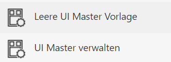
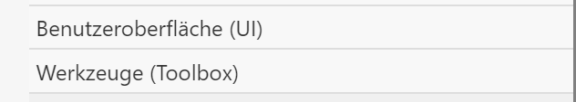
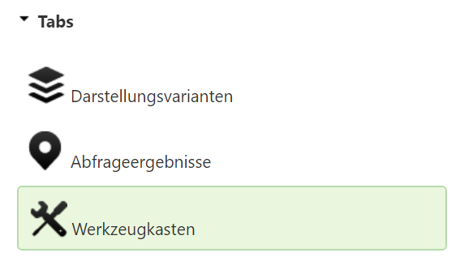
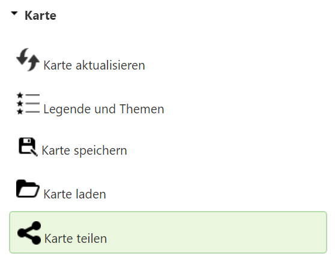
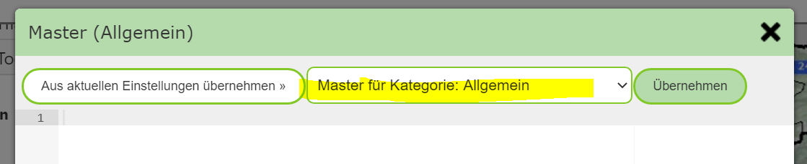
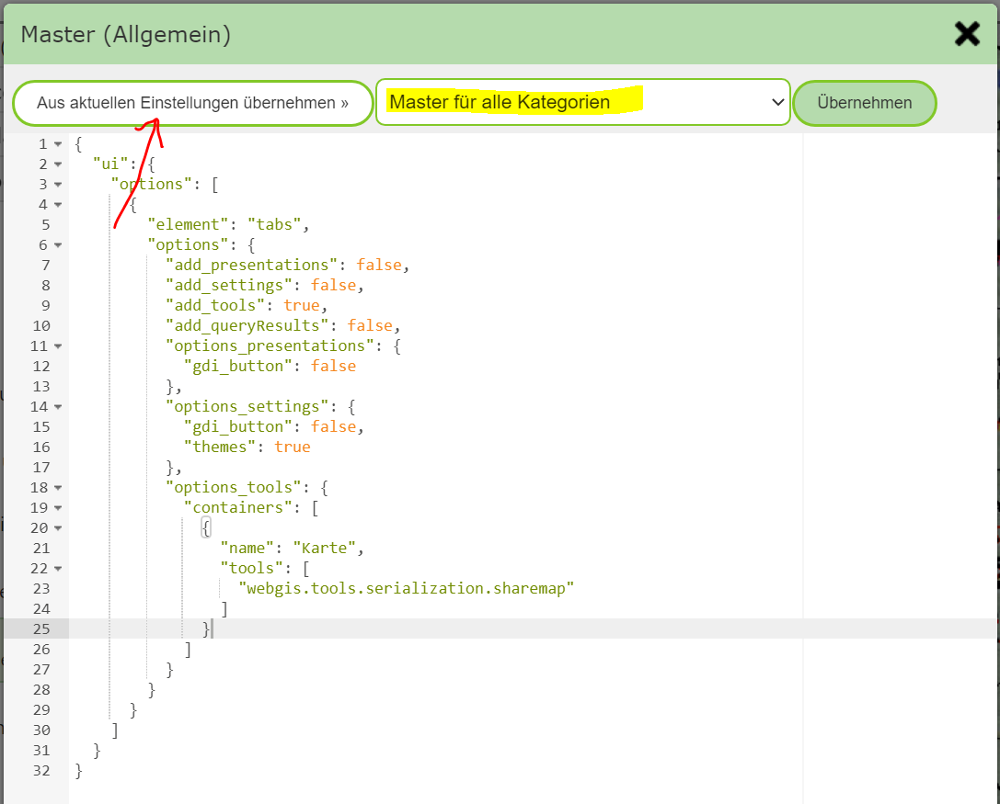
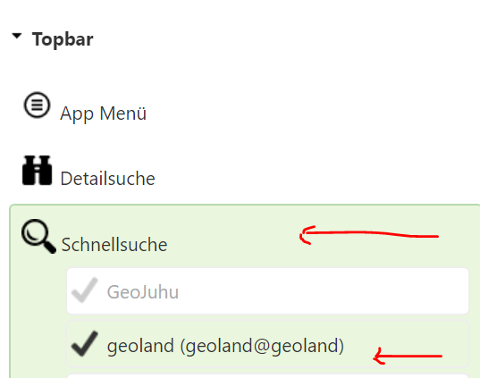
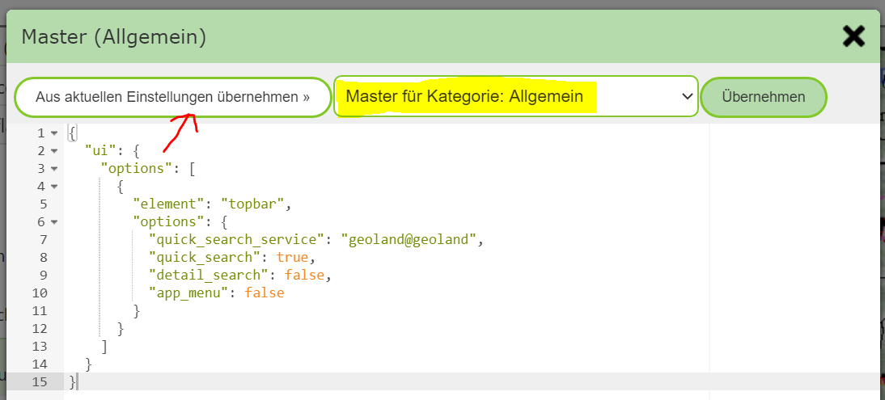

Creating UI Master Templates in the MapBuilder¶
The practical approach for creating UI master templates is done with the MapBuilder.
First, an existing map must be opened with the MapBuilder. In the sidebar of the MapBuilder, the following tools are available for UI master templates:

Note
These tools are only visible if the MapBuilder is opened with an existing map.
Since UI master templates also relate to a map category, this must be passed to the MapBuilder via the
URL parameter categorie. This happens automatically when you start
with an existing map.
Since you generally only define a few elements that are used for all maps, all unnecessary elements in this map must be deselected. Elements that can be affected by UI master templates are located in the two groups:

To simplify this step, the tool Empty UI Master Template, already mentioned above, can be used.
The tool opens a notice that all UI elements will be removed from the map. This does not affect the
already published map, as long as it is not published again after this step.
If you confirm the dialog with Remove UI Element, all elements from the two groups mentioned above
are deleted (UI, Tools).
Note
All other elements from the other groups can/should be kept and have no influence on the result. However, in order to later be able to create templates, at least one map extent and one map service must be selected. Which one is not relevant, since map services are not included in the templates.
Now, for example, you can make the Share Map tool available for all maps.
For tools, it is important to first activate the tab Toolbox under User Interface (UI).
Without a toolbox, the tools will not be shown later in the template:

Then, under Tools (Toolbox), select the corresponding tool:

In the map preview, the toolbox with exactly this one tool should now also be visible again.
Once the map preview is fully built, you can click Manage UI Master in the sidebar.
This opens an editor in which the UI templates for the current map category or the entire portal page
can be managed:

The selection list determines what the displayed template applies to:
Master for category: [current category]
Master for all categories
Both templates are empty after the first call. Since we want to add Share Map to all maps on the portal page,
we switch to Master for all categories.
To adopt the template from the current settings in the MapBuilder, click Adopt from current settings:

Clicking the Apply button saves the current template.
Note
To avoid errors, when saving it is also checked whether the template is a valid JSON object.
Note
A template can be deleted or changed again later. To delete it, remove the entire text and
click Apply.
If you also want to add the app menu for all maps, for example, this must be selected under User Interface (UI),
and the steps above repeated.
Now we want to add a quick-search service for all maps in the current map category.
To do this, we start again with the Empty UI Master Template tool and then select, under
User Interface (UI), the quick search and the corresponding service:

Here too, the quick search should first appear again in the map preview.
Afterwards, open the Manage UI Master tool and adopt the current settings for the map category:

Note
After the UI master templates have been created, leave the MapBuilder again. Do not publish the current map, since otherwise all originally set UI elements would disappear from the map.